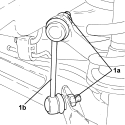
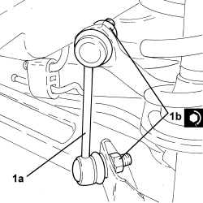

4420C12 REAR SUSPENSION STABILIZER BAR JOINT - R+R ON VEHICLE
- Path
- Procedures > 44 SUSPENSION AND WHEELS > 4420 REAR SUSPENSION > 4420C REAR SUSPENSION STABILIZER BAR/LINKS > 4420C12 REAR SUSPENSION STABILIZER BAR JOINT - R+R ON VEHICLE
- Kind
- repair procedure (removal / refitting; the operation number is the code)
- Applies to
- all engines; all production periods
- Interactive page
- https://sloeber94.github.io/elrnDB-aBrrSpdr/en/#/946002215
Applies to: all engines; all production periods
 Removing
Removing
 Refitting
Refitting- Position the vehicle on a lift.
Op. 4450B06 LEFT REAR WHEEL - R.R
1. Undo the nuts (1a) and remove the rear suspension anti-roll bar joint (1b).

Applies to: all engines; all production periods
Refitting
Removing1. Place the left rear suspension anti-roll bar joint (1a) in its housing and secure it by tightening the new nuts (1b) to the recommended torque.

Applies to: all engines; all production periods
Op. 4450B06 LEFT REAR WHEEL - R.R
- Remove the vehicle from the lift.